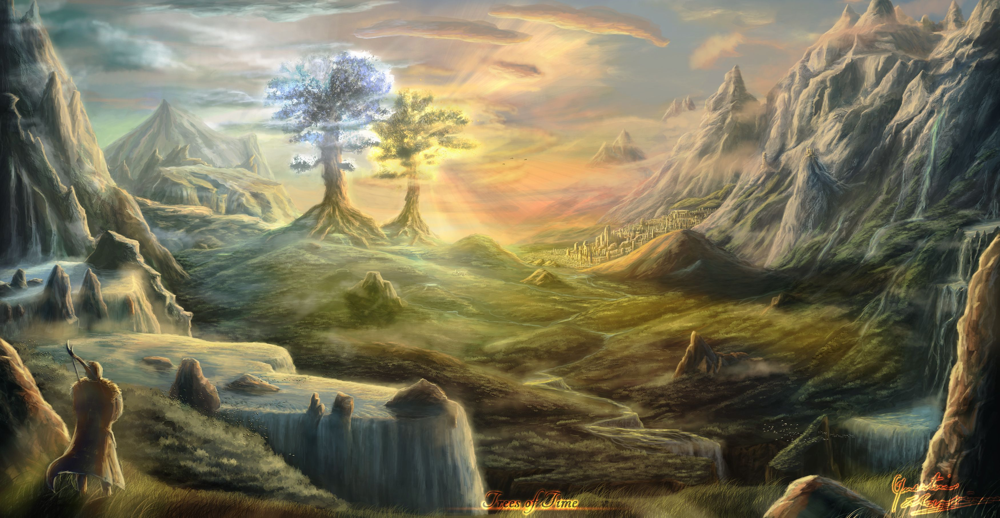

"The Two Trees of Valinor, also known as the Trees of the Valar, were Laurelin (the Gold Tree) and Telperion (the Silver Tree), which brought light into the land of the Valar in ancient times. They were destroyed by Melkor and the primal spider Ungoliant, but their last flower and fruit were made by the Valar into the Sun and the Moon." (The Lord of the Rings Wiki, 2026)
"The first sources of light for all of Arda were two enormous Lamps: Illuin, the silver one to the north, and Ormal, the golden one to the south. These were cast down and destroyed by Melkor. Afterward, the Valar went to Valinor and Yavanna sang into existence the Two Trees, silver Telperion and golden Laurelin. Telperion was considered male and Laurelin female. The Trees sat on the hill Ezellohar located outside Valmar. They grew in the presence of all of the Valar, watered by the tears of Nienna." (The Lord of the Rings Wiki, 2026)